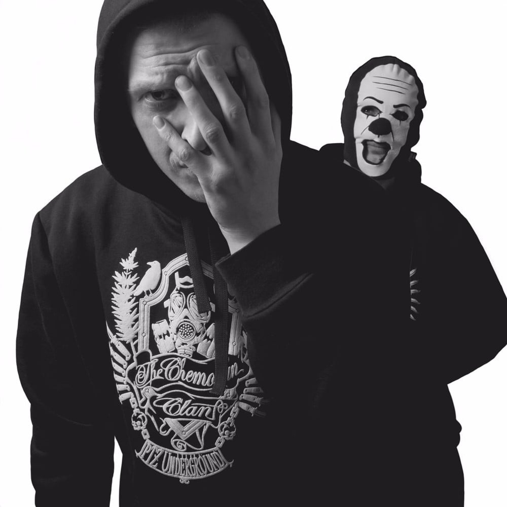
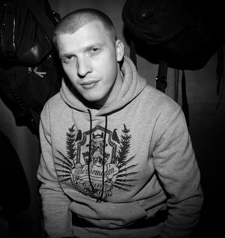
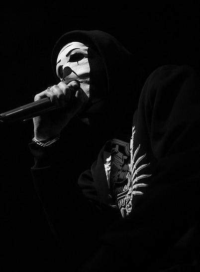

Underground (výslovnost „andrgraund“, z anglického výrazu pro podzemí) je výraz označující skryté, např. neuváděné, neoficiální až ilegální hnutí. Může jít např. o kriminální podsvětí nebo odboj během druhé světové války, v jiných jazycích se označení používá především pro kulturní hnutí, umělecká hnutí, hudební hnutí, subkulturu, kontrakulturu atp. vymaňující se z hlavního proudu.
Valentin Vladimirovič Suchodolskij (narozen 8. července 1987 , Bělomorsk , Karelská autonomní sovětská socialistická republika ), známější pod pseudonymy The Chemodan a Dirty Louis , je ruský rapper. Bývalý člen The Chemodan Clan a člen kapely XIII.
Грязный Луи se narodil 8. července 1987. Mezi hudební vlivy patří Mobb Deep , Boot Camp Clik a Cypress Hill .
Valentin se podle svých slov rozhodl věnovat hudbě kvůli „nespokojenosti s tím, co se v té době dělo s ruským rapem“.
Umělec o vytvoření svého pseudonymu řekl:
„S touto honičkou jsem přišel sám. Koncem 90. let běžela v televizi reklama na čistič záchodů.
Byl tam mikrob. Řekl: "Jsem Dirty Louie na okraji toalety." Skupina vydala svůj první videoklip o čtyři roky později .
Sloužil ve vzdušných silách jako střelec-operátor výsadkového bojového vozidla. Během služby v armádě vyšlo album „The Ministry of Health Warned“ .
1. prosince 2011 vyšlo studiové album Gnoy , které se podle The Flow and restore: dostalo na seznam „20 rapových alb 2010s“ .
V roce 2017 byl projekt The Chemodan Clan uzavřen a poslední album vyšlo v rámci skupiny The End .
V roce 2019 spustili Dirty Louie, Brick Bazuka a Yara Sunshine nový projekt XIII a vydali své debutové studiové album City 13 .
19. března 2021 vyšlo druhé studiové album v rámci XIII s názvem Sekta .
17. června 2022 vyšlo třetí studiové album v rámci XIII s názvem Wudu .
21. října 2022 vyšlo čtvrté studiové album v rámci XIII s názvem Reibu .
11. listopadu 2022 vyšlo první sólové studiové album po pěti letech „The End is the Beginning“ .
26. ledna 2024 vyšlo album s názvem „Historia Morbi“. Hostující verše můžete slyšet od Brutto , ATL , Chester Nebro a Friendly Thug 52 Ngg .
Rapper Brick Bazuka z kreativního sdružení The Chemodan Clan se nerad ukazuje na veřejnosti a nedává rozhovory zleva i zprava. I na koncertech skrývá tvář pod strašidelnou maskou. Umělcovo tajemství však přitahuje ještě více diváků k jeho originálním skladbám. 
Alexey Alekseev (skutečné jméno rappera) se narodil 21. března 1989. O jeho dětství je známo jen velmi málo. Jako teenager se ten chlap přestěhoval do hlavního města Karélie, města Petrozavodsk, kde se aktivně připojil k místní undergroundové rapové scéně. V mládí studoval hru na klavír na hudební škole.
Alexey potkal Valentina Sukhodolského (aka The Chemodan, aka Dirty Louis) v basketbalové sekci, když jim bylo oběma asi 15 let. Později Louis pozval svého přítele do své skupiny, kde bylo vzhledem k odvážnému obsahu písní zvykem vystupovat pod maskami. Nový člen si vybral image připomínající strašidelného klauna.
Společně natočili úspěšné album „While Someone Died“ (2010) a první videoklip „The Smell of Urban“. Ale zároveň Alekseev také propagoval svou sólovou kariéru. V roce 2011 vydal své vlastní mini-album „Paradox“, na kterém se podílelo několik jeho kolegů rapperů. Jedním z hitů plastické hudby byla skladba „From the Gateways“.
O rok později Brick Bazuka (jeho druhý pseudonym je Cartoon Head) představil plnohodnotné album „Layers“ s populární písní „Cream“ a mnoha hity. V roce 2013 vyšlo album „Eat“ se skladbami „Foreign Paradise“, „Higher, Hotter“ a „Expiration Date“. Toto vydání se ukázalo být ještě úspěšnější než další album The Chemodan Clan „Except Women and Children“.
Alekseev se stával stále profesionálnějším, zatímco mnoho posluchačů si všimlo, že rapperovy rýmy a témata se od skladby ke skladbě téměř neměnily a zůstaly ve sféře hlásání antisystémových a mužských hodnot.
V roce 2016 umělec vydal své čtvrté sólové album „Me and My Demon“ s populární skladbou „Boshka“, kterou hrál společně s MiyaGi a Endgame.
Následující rok byl projekt The Chemodan Clan uzavřen spolu s posledním albem The End. Ale již v roce 2019 založili Dirty Louie a Brick Bazuka novou skupinu XIII a vydali své debutové album City 13. K dnešnímu dni tato skupina vydala již čtyři desky.
Od roku 2023 rapper aktivně koncertuje jak sólově, tak jako součást skupiny.